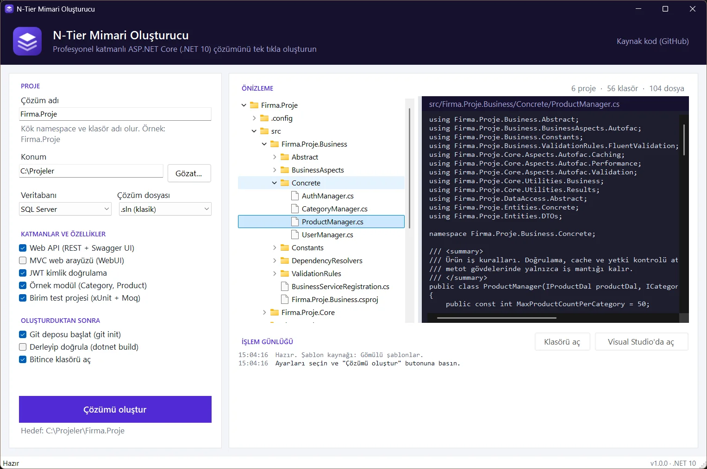

Repository and results
An async generic repository with AsNoTracking reads, IResult / IDataResult<T> result types and BusinessRules.RunAsync, which stops at the first failing rule.
Developer tool · Windows
Starting a new ASP.NET Core project usually means setting up the same layered projects, folders and base classes by hand. This Windows app does it in one click: choose a name and a few options, preview every file before it's written, and get a .NET 10 solution that builds right away.
Windows 10/11 with the .NET 10 SDK. Unzip the release and run NTierGenerator.exe.

For a solution called Firma.Proje with the default options:
Firma.Proje/
├── src/
│ ├── Firma.Proje.Core/ project-independent infrastructure
│ │ ├── Aspects/Autofac/ Validation, Caching, Performance, Transaction
│ │ ├── CrossCuttingConcerns/ caching, validation, central error handling
│ │ ├── DataAccess/ IEntityRepository, EfEntityRepositoryBase
│ │ ├── Entities/ IEntity, IDto, BaseEntity, User, OperationClaim
│ │ └── Utilities/ Results, BusinessRules, Interceptors, IoC, Security
│ ├── Firma.Proje.Entities/ Concrete, DTOs
│ ├── Firma.Proje.DataAccess/ Abstract, Concrete/EntityFramework
│ ├── Firma.Proje.Business/ Abstract, Concrete, ValidationRules, BusinessAspects
│ └── Firma.Proje.WebAPI/ Controllers, OpenAPI + Swagger UI, Program.cs
├── tests/
│ └── Firma.Proje.Tests/ xUnit + Moq
├── .config/dotnet-tools.json dotnet-ef as a local tool
├── Directory.Build.props shared build settings
├── Directory.Packages.props every NuGet version in one place
└── Firma.Proje.slnDependencies point one way: WebAPI → Business → DataAccess → Entities → Core.
An async generic repository with AsNoTracking reads, IResult / IDataResult<T> result types and BusinessRules.RunAsync, which stops at the first failing rule.
Validation, caching, performance, transaction and (with JWT) secured-operation aspects via Autofac and Castle DynamicProxy. Unlike common samples of this pattern, caching, transactions and timing happen after the task completes.
PBKDF2 password hashing (HMAC-SHA512, 210,000 iterations), HS512 tokens signed with a random key per solution, register and login endpoints, and an Authorize button in Swagger UI.
DbContext through DI, IEntityTypeConfiguration classes, automatic CreatedDate / UpdatedDate, and pending migrations applied at startup in Development.
REST controllers, central error handling with ProblemDetails (400 for validation, 401/403 for auth), CORS, /health and a .http file with sample requests.
Central Package Management with transitive pinning, Directory.Build.props, .editorconfig, convention-based DI registration and a README that explains which layer new code goes into.
The right-hand preview shows every file that will be created, with its content, before anything is written to disk.
| Option | What changes |
|---|---|
| Solution name | Root namespace, folder and project names. Invalid names get a suggestion (“Mağaza Yönetimi” → MagazaYonetimi). |
| Database | SQL Server (LocalDB), PostgreSQL or SQLite: the NuGet package, the UseXxx call and the connection string. |
| Solution file | The classic .sln or the newer .slnx. |
| Web API / MVC | Presentation layers; at least one has to be selected. |
| JWT authentication | User and OperationClaim entities, token creation, register/login and [SecuredOperation]. Needs Web API. |
| Sample module | A Category/Product CRUD through every layer. When it's off, empty folders keep a .gitkeep. |
| Unit test project | xUnit + Moq tests for business rules and helpers. |
| After generating | git init, dotnet build and opening the folder; build output streams into the app's log. |
A template engine that has nothing to do with WinForms, with the window as a thin layer on top.
The Templates folder is an exact copy of the generated solution, embedded in the DLL as resources along with their folder paths. Copy it next to the exe to change templates without rebuilding.
Tokens like __Name__ are replaced in contents and paths. Option-dependent parts are marked with comment-style blocks for each file type — //#if Auth, <!--#if Sample-->, @*#if Sample*@ — with #elif, #else, !, &&, || and parentheses. An unknown symbol is treated as a typo and reported as an error.
The whole plan is built in memory, which is what the preview shows, and only then written to disk. Files whose entire content is conditional are skipped when their option is off, and dot_gitignore / X.csproj.template become .gitignore / X.csproj so IDEs don't mistake templates for real projects.
GUIDs in the solution file are derived from names, so the same options always produce the same files. Only the JWT key and the ports are random.
using __Name__.DataAccess;
//#if Auth
using __Name__.WebAPI.OpenApi;
//#endif
…
//#if Auth
builder.Services.AddOpenApi(options =>
options.AddDocumentTransformer<BearerSecuritySchemeTransformer>());
//#else
builder.Services.AddOpenApi();
//#endif
…
app.UseCors();
//#if Auth
app.UseAuthentication();
//#endif
app.UseAuthorization();Unit tests generate the plan for 3 databases × 24 layer/feature sets × 2 solution formats and check that no token or directive is left over, JSON and XML files are valid, and the projects and solution file agree.
Separate build tests generate five scenarios from scratch, compile them with warnings treated as errors and run the generated tests. A generated SQLite API was also exercised end to end: register/login, 401/403, validation errors, business rules and cache clearing.
dotnet test
$env:NTIER_BUILD_TESTS = "1"; dotnet testWindows 10/11 and the .NET 10 SDK, which also brings the Desktop Runtime the app needs.
Unzip the archive from the Releases page and run NTierGenerator.exe.
dotnet run --project src/NTierGenerator.AppThe output is publish\NTierGenerator.exe; add -SelfContained for machines without .NET.
.\publish.ps1The last used options are saved in %LOCALAPPDATA%\NTierGenerator\settings.json.
NTierGenerator.Engine handles templates, solution generation and name validation; NTierGenerator.App is the WinForms window; NTierGenerator.Engine.Tests holds the xUnit tests.
Directory.Packages.props; updating them means editing that file.dotnet ef migrations add command.new.[TransactionScopeAspect] relies on providers that support ambient transactions (SQL Server, PostgreSQL); it hasn't been tried with SQLite.